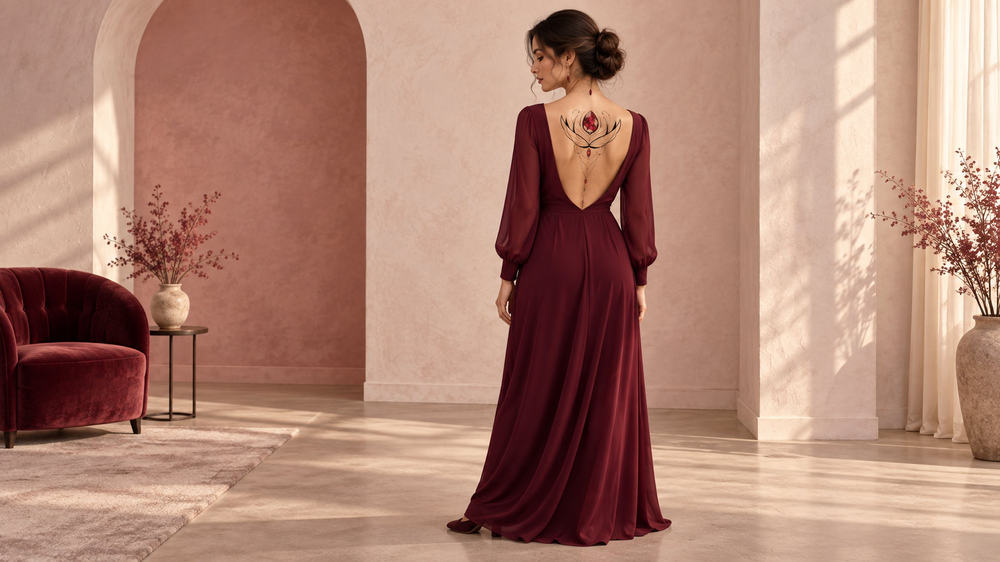
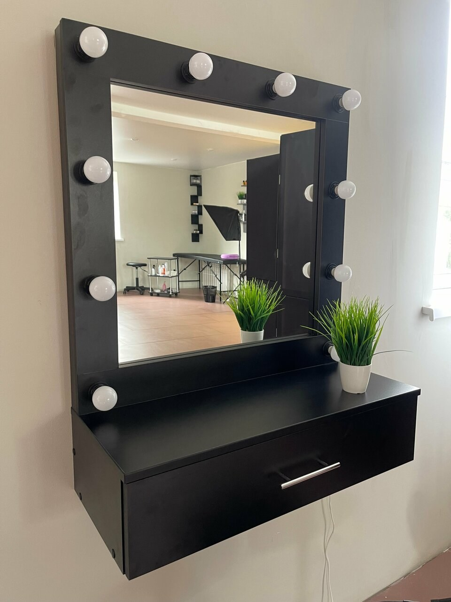
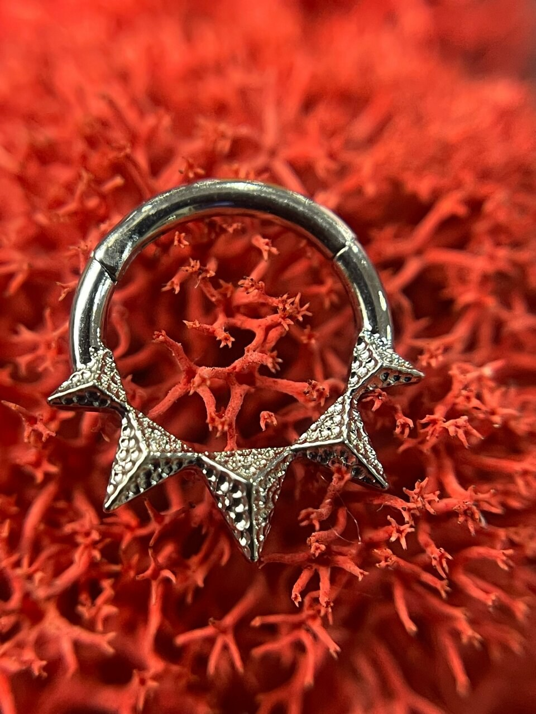

Татуировки
и пирсингв Рязани
01 / Портфолио
Работы студии
Татуировки и пирсинг Fionin Tattoo.
Фотографии из галереи студии.
Фото из галереи студии на Яндекс Картах.
Вся галерея ↗02 / Услуги студии
Ваша идея.
Наш почерк.
Татуировки, пирсинг и татуаж.
Украшения — от лаконичных колец до деталей с кристаллами.
На Яндекс Картах прайс отмечен как давно не обновлявшийся. Актуальную стоимость и наличие украшений уточните перед записью.
Весь прайс на Яндекс Картах ↗На фотографиях — работы, украшения
и интерьер Fionin Tattoo.
Татуировка
3 000 ₽ / час
Стоимость работы зависит от времени сеанса. Обсудим размер, рисунок и детали.
Пирсинг
от 990 ₽
Мочка — от 990 ₽, дополнительные проколы мочки — 990 ₽, хеликс — 1 690 ₽.

Интерьер студииТатуаж
от 2 490 ₽
Зону, желаемый результат и окончательную стоимость обсудим перед записью.

Украшения
для пирсинга
Кольца, штанги, бананы, накрутки с опалом и кристаллами Swarovski. Цена зависит от украшения.
Можно прийти без готового эскиза?
Да. Опишите идею или покажите несколько примеров. Мастер поможет определиться с композицией и деталями.
Как узнать стоимость?
Напишите, что хотите сделать, где и какого размера. Добавьте референсы в переписке — мастер оценит работу до записи.
Как подготовиться и что делать после?
Перед сеансом мастер расскажет о подготовке, после — об уходе за татуировкой или проколом. Если появятся вопросы, напишите в студию.
Можно перенести запись?
Напишите в диалог, где договаривались о сеансе, или позвоните. Сообщите заранее, чтобы подобрать новое время.
04 / Давайте знакомиться
Обсудим
вашу идею?
Пара слов о задумке — первый шаг.
Стоимость, эскиз и время обсудим лично.
05 / До встречи
Рязань.
Островского, 120.
Написать в VK Ежедневно, 10:00–20:00По предварительной записи